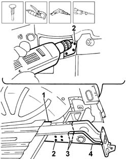
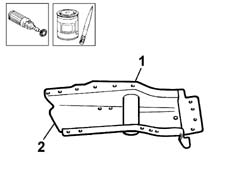
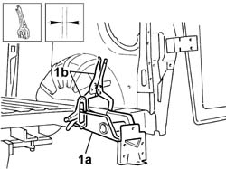
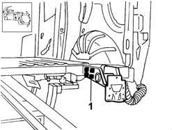

7210B61 boot floor pan rail partial
- Path
- Procedures > 72 PANELS AND FRAMES > 7210 REMOVING-REFITTING > 7210B structure elements-central and rear part > 7210B61 boot floor pan rail partial
- Kind
- repair procedure (removal / refitting; the operation number is the code)
- Applies to
- all engines; all production periods
- Interactive page
- https://sloeber94.github.io/elrnDB-fDbl/en/#/2585257
Applies to: all engines; all production periods
 Removing
Removing
 Refitting
RefittingCheck if any of the connected parts are deformed by checking body alignment dimensions. Use appropriate measurement tools (reference rigs, templates or gauges).
Straighten the body if necessary.
1. Remove the layer of sealant.
2. Reduce the spot welds along the edges of the side members both on the inside of the vehicle and underneath it.
Remove the panel offcuts.
3. Use a pneumatic saw to cut the rail part along the cutting line shown.
4. Remove the side member from the vehicle.

Applies to: all engines; all production periods
Straighten the edges of the panel.
Use a grinding wheel to remove the weld spot residues.
Apply electro-galvanizing paint to the parts which have been ground.
1. Use a rotary brush to remove the corrosion-proofing around the edge of the parts.
2. Apply electro-galvanizing paint to the edges in contact with the vehicle.

Applies to: all engines; all production periods
Refitting
Removing1. Correctly position the replacement part (1a) on the bodyshell and secure it using self-locking clamps (1b).
Check it is properly aligned.

Applies to: all engines; all production periods
1. Fill weld along all areas of contact between part and vehicle.

Applies to: all engines; all production periods
Check that the welded parts are correctly positioned.
Level the spot welds using a disc grinder.
Use a rotary brush to clean the inner parts.
Apply electro-galvanizing paint to the parts which have been ground.